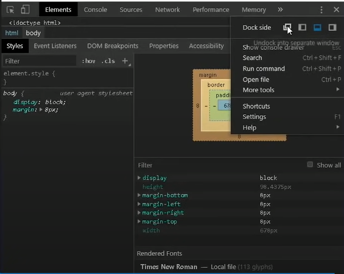
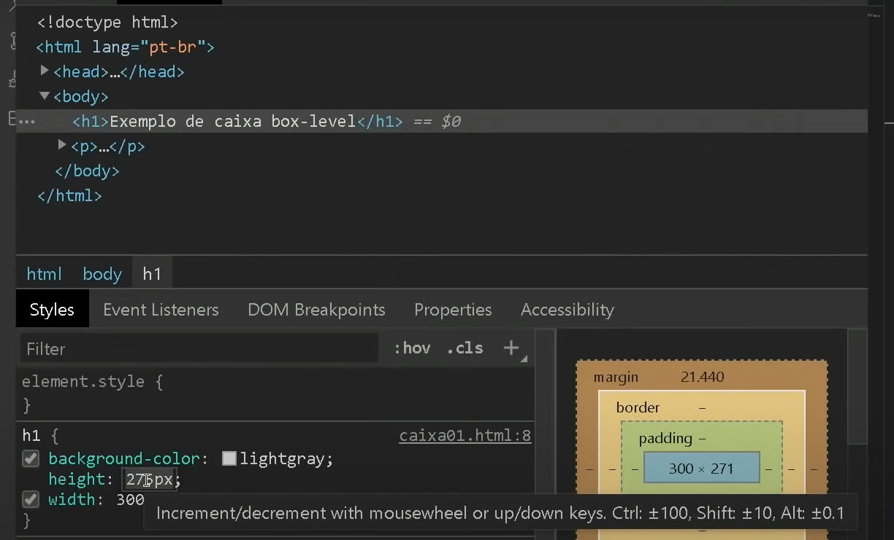
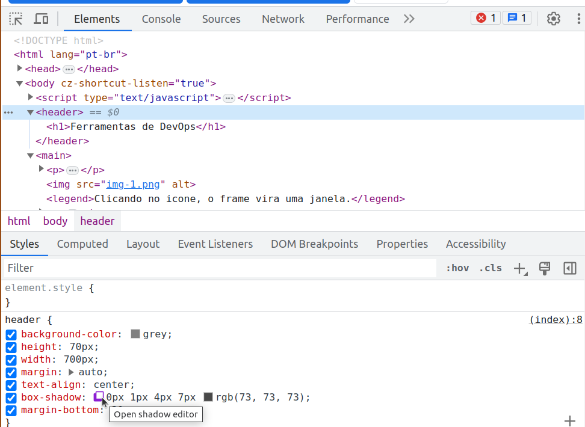
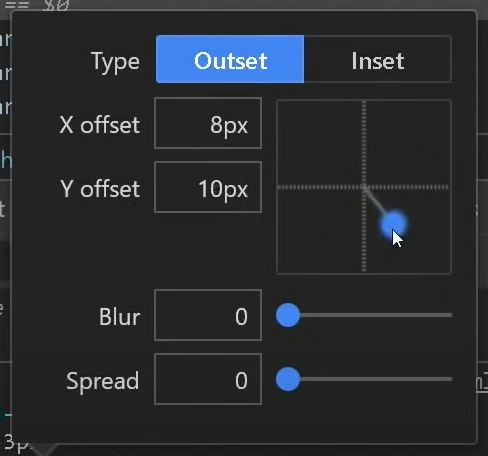

As Ferramentas de desenvolvedor podem ser acessadas via atalho de teclado CTRL+SHIFT+I, também clicando com botão direito do mouse e clicando em inspecionar.
Selecionando o elemento em html e depois indo nas opções de estilo do DevOps, poderemos editar os valores númericos com o scroll do mouse.
Clicando no quadrado roxo, abre um frame para editar a sombra da caixa de forma dinámica
 